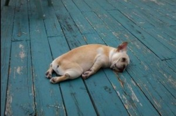
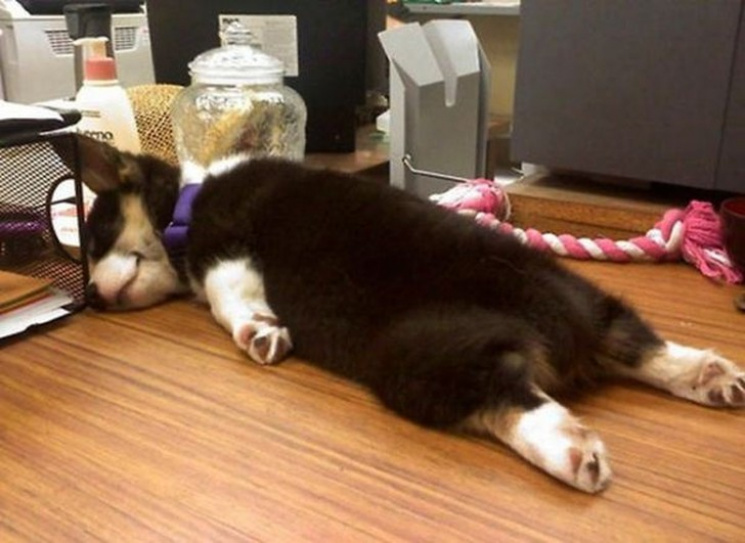
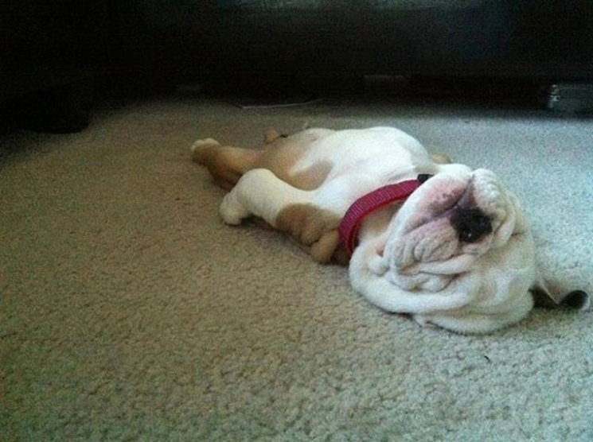
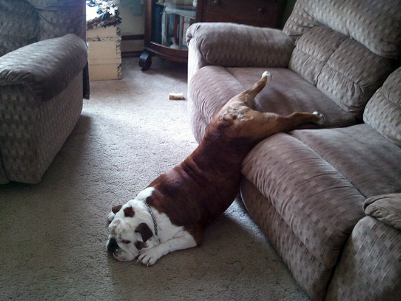
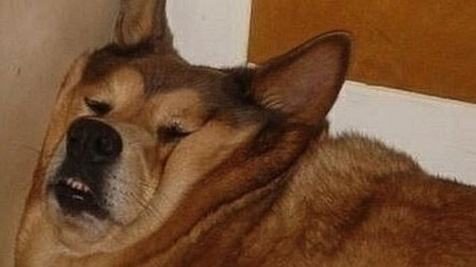

Корги
Под названием «корги» скрываются сразу две породы — вельш-корги пемброк и вельш-корги
кардиган. Эти псы похожи друг на друга, но есть между ними и различия.
Изначально и кардиганы, и пемброки — пастушьи собаки, которые помогали следить за скотом.
Только одни жили на юго-западе Уэльса, а вторые — в его южной части. В их более ранней истории
и происхождении тоже мало общего.
Вельш-корги кардиган — одна из старейших пород на Британских островах. Их предков доставили в
Уэльс кельтские племена ещё до нашей эры. Пемброки же гораздо «моложе». Вероятнее всего, они
приехали на Британские острова вместе с викингами, а история породы прослеживается примерно с
XI века уже нашего тысячелетия.
Ирландский сеттер
Ирландские сеттеры - собаки значительных размеров, от 60 до 70 см в высоту и весом 27-32 кг.
Они высокие и элегантные с довольно длинными лапами и шеей. Уши висят, а длина морда умеренная
с выраженной остановкой (лоб). Главное украшение ирландского сеттера - это, конечно же, шесть,
окрас которой варьируется от глубокого красного дерева до светло-рыжего. Шерсть гладкая и достаточно
прямая (может быть немного волнистой), средней длины. Более длинные волосы находятся на задней стороне
ног, груди и на хвосте. Уши имеют шелковистую оброслость. Общее впечатление от ирландского сеттера -
это очарование и элегантность, хотя брыли (губы) часто бывают немного отвислыми, и поэтому может быть
кое-какое слюноотделение. Это, как правило, выносливые собаки, часто живущие до 12 или 14 лет.

Первоначально ирландские собаки были рыжими и белыми, но потом появилась «знаковая» собака, которая
подтолкнула влияние в пользу полностью рыжих собак. Чемпион Палмерстон был ошеломляющей, тонкокостной
собакой с окрасом красного дерева, которая показала себя в 1862 году. Он дал начало большинству наших
современных ирландских сеттеров.
Австралийская овчарка
История возникновения австралийской овчарки так же запутана, как и появление ее имени. Некоторые
полагают что они могли попасть в США, вместе с баскскими иммигрантами из Испании, и на родине они
были пастушьими собаками. Однако, научные исследования полагают что они происходят от собак, которые
попали в Америку через Берингов перешеек. Достаточно ясно и то, что они сформировались в западных штатах
США, в течение XIX—XX века. Они определенно рабочих кровей, первые заводчики выбирали собак по
способностям, а не по экстерьеру. Аусси стали незаменимыми помощниками при выгоне скота в Скалистых горах,
так как они малочувствительны к перепадам высот. Фермеры из Боулдера, штат Колорадо, начали первыми разводить
этих собак, так как слава об их способностях к управлению овцами, разносила далеко за границами штата.
Любите пёсиков

С того момента, когда ты берешь на руки теплый комочек или когда открываешь дверь перед бездомной взрослой
псиной, она предана тебе всей душой. Собаке не нужно объяснять, за что нужно любить хозяина. Ей все равно,
в каком ты настроении. Наплевать, сколько ты весишь. Безразлично, сколько зарабатываешь, какой у тебя
макияж, брендовая ли у тебя сумка и есть ли диплом о высшем образовании. Собаки любят человека просто так,
без всяких условий, даже если ты не балуешь ее вкусненьким и частенько ругаешь, она все равно машет тебе
хвостом и тает от счастья, когда видит тебя.
Бигль
История породы бигль начинается со времён Вильгельма Завоевателя, который привёз в Англию собак
Тальбота в 1066-м году. Эти ныне вымершие собаки являются предками современного бигля, а также предками
современных фокстерьеров. В последующие века среди знати были очень популярны гончие маленьких размеров,
некоторые из которых были настолько миниатюрны, что их называли «перчаточные гончие». Во времена правления
Эдварда II (1307-1327) эти перчаточные гончие были в особом почете, как и при правлении Генриха VII.
Королева Елизавета просто обожала этих собак и у неё были целые стаи маленьких гончих, которых, впрочем,
почти никогда не брали на охоту. Охота столь маленькой породы среди аристократии носила чисто развлекательный
характер - в комнате могли выпустить мышь с бантиком и делать ставки на то, как быстро собака ее словит.
И словит ли вообще. Их также можно видеть на картинах того периода.


А вот откуда взялось само название породы не совсем понятно, тут исследователи теряются в догадках, так как
есть версии о происхождении как из французского языка (begueule - открытое горло), так и из староанглийского
(beаg - маленький). К началу 18 века бигль начал отступать на второй план, так как его место в домах
аристократии стремительно занимал фокстерьер - порода более крупная и менее игрушечная.
Доберман
Порода собак доберман имеет спортивное, мускулистое телосложение, худощавое но эстетичное.
Лапы длинные, мускулистые, а хвост обычно купируется. Шея длинная, голова узкая, вытянутая, уши также
купируются - это делается для того, чтобы улучшить слух собаки, так как, если уши не купировать, они
свисают по бокам головы, что негативно влияет на слуховые качества.
